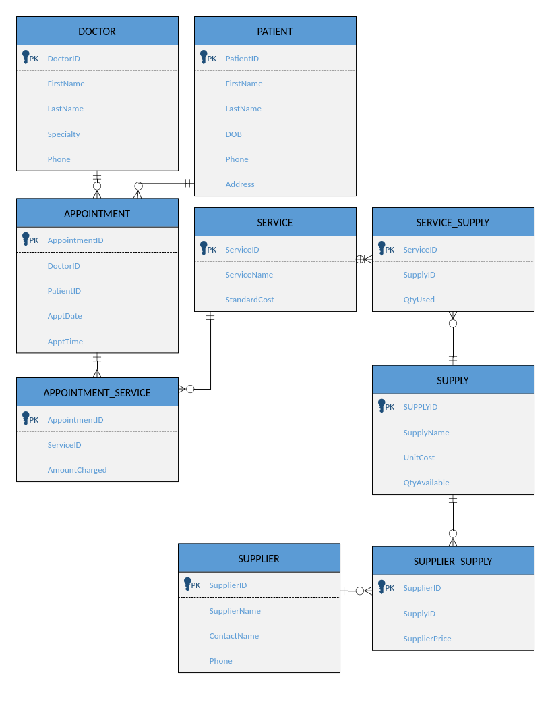

This is a database I built for a country doctor's office as the final project for Database Concepts. The office has three doctors and about a hundred patients, and needs to track appointments, the services those doctors perform, the supplies each service uses, and which suppliers provide those supplies. The project went in three phases: design an ER diagram, convert that into table specs with data types and keys, then build the actual thing in Access and write queries a real office would want, like who's on the schedule today or which supplies get used the most.
The assignment asked for an ERD a non-technical office manager could actually follow, so before anything gets built, the diagram has to communicate the shape of the data on its own. Six entities came out of the scenario: Doctors, Patients, Services, Supplies, Suppliers, and Appointments. Three of those relationships are many-to-many (an appointment can include multiple services, a service can use multiple supplies, a supply can come from multiple suppliers), so the diagram resolves each of those with a junction table rather than trying to force a direct link.

Original file: DoctorsOffice-ERD.vsdx (Visio)
The assignment said this phase is communication between system designers and programmers. Because of that framing, this document is written on the assumption that little information about how the database should be built is warranted and focuses on structure instead.
This converts the Phase 1 entity relationship diagram into table definitions for the Access database: each table's fields, data types, and key relationships.
| Field | Data Type | Key | Notes |
|---|---|---|---|
DoctorID | AutoNumber | PK | |
FirstName | Short Text (50) | ||
LastName | Short Text (50) | ||
Specialty | Short Text (50) | ||
Phone | Short Text (15) |
| Field | Data Type | Key | Notes |
|---|---|---|---|
PatientID | AutoNumber | PK | |
FirstName | Short Text (50) | ||
LastName | Short Text (50) | ||
DOB | Date/Time | ||
Phone | Short Text (15) | ||
Address | Short Text (100) |
| Field | Data Type | Key | Notes |
|---|---|---|---|
AppointmentID | AutoNumber | PK | |
DoctorID | Number (Long Integer) | FK | References DOCTOR.DoctorID |
PatientID | Number (Long Integer) | FK | References PATIENT.PatientID |
ApptDate | Date/Time | ||
ApptTime | Date/Time |
| Field | Data Type | Key | Notes |
|---|---|---|---|
ServiceID | AutoNumber | PK | |
ServiceName | Short Text (50) | ||
StandardCost | Currency | List price for the service |
| Field | Data Type | Key | Notes |
|---|---|---|---|
AppointmentID | Number (Long Integer) | PK, FK | References APPOINTMENT.AppointmentID |
ServiceID | Number (Long Integer) | PK, FK | References SERVICE.ServiceID |
AmountCharged | Currency | Actual cost billed to the patient for this service at this visit |
Composite primary key: AppointmentID and ServiceID together.
| Field | Data Type | Key | Notes |
|---|---|---|---|
SupplyID | AutoNumber | PK | |
SupplyName | Short Text (50) | ||
UnitCost | Currency | ||
QtyOnHand | Number (Integer) |
| Field | Data Type | Key | Notes |
|---|---|---|---|
ServiceID | Number (Long Integer) | PK, FK | References SERVICE.ServiceID |
SupplyID | Number (Long Integer) | PK, FK | References SUPPLY.SupplyID |
QtyUsed | Number (Integer) | Typical quantity of this supply used per service |
Composite primary key: ServiceID and SupplyID together.
| Field | Data Type | Key | Notes |
|---|---|---|---|
SupplierID | AutoNumber | PK | |
SupplierName | Short Text (50) | ||
ContactName | Short Text (50) | ||
Phone | Short Text (15) |
| Field | Data Type | Key | Notes |
|---|---|---|---|
SupplierID | Number (Long Integer) | PK, FK | References SUPPLIER.SupplierID |
SupplyID | Number (Long Integer) | PK, FK | References SUPPLY.SupplyID |
SupplierPrice | Currency | Price this supplier charges for the supply |
Composite primary key: SupplierID and SupplyID together.
Every relationship is one to many, going from the parent table to the child table.
| Parent Table | Child Table | Join Field |
|---|---|---|
DOCTOR | APPOINTMENT | DoctorID |
PATIENT | APPOINTMENT | PatientID |
APPOINTMENT | APPOINTMENT_SERVICE | AppointmentID |
SERVICE | APPOINTMENT_SERVICE | ServiceID |
SERVICE | SERVICE_SUPPLY | ServiceID |
SUPPLY | SERVICE_SUPPLY | SupplyID |
SUPPLY | SUPPLIER_SUPPLY | SupplyID |
SUPPLIER | SUPPLIER_SUPPLY | SupplierID |
The last phase was building the actual database in Access, loading in sample data, and writing the five queries the assignment asked for. Below is the SQL behind each one, and what it's actually doing.
Lists every patient with an appointment today, using Access's Date() function so it always checks against the current day instead of a hardcoded date.
SELECT
PATIENT.FirstName,
PATIENT.LastName,
APPOINTMENT.ApptTime
FROM
PATIENT
INNER JOIN APPOINTMENT ON PATIENT.PatientID = APPOINTMENT.PatientID
WHERE
APPOINTMENT.ApptDate = Date();Counts how many appointments each patient has had and ranks them from most to least, so the office can see who its regulars are.
SELECT
PATIENT.FirstName,
PATIENT.LastName,
COUNT(APPOINTMENT.AppointmentID) AS VisitCount
FROM
PATIENT
INNER JOIN APPOINTMENT ON PATIENT.PatientID = APPOINTMENT.PatientID
GROUP BY
PATIENT.PatientID,
PATIENT.FirstName,
PATIENT.LastName
ORDER BY
COUNT(APPOINTMENT.AppointmentID) DESC;Counts how many times each service has actually been billed across all appointments, ranked from most to least common.
SELECT
SERVICE.ServiceName,
COUNT(APPOINTMENT_SERVICE.ServiceID) AS TimesUsed
FROM
SERVICE
INNER JOIN APPOINTMENT_SERVICE ON SERVICE.ServiceID = APPOINTMENT_SERVICE.ServiceID
GROUP BY
SERVICE.ServiceID,
SERVICE.ServiceName
ORDER BY
COUNT(APPOINTMENT_SERVICE.ServiceID) DESC;This one chains four tables together: from a supplier, to what they supply, to how often that supply actually gets used in a service. That's a different question than "which supplier stocks the most items", it's which supplier provides the supplies that get used most, which is what the assignment was actually asking for.
SELECT
SUPPLIER.SupplierName,
SUPPLY.SupplyName,
COUNT(SERVICE_SUPPLY.SupplyID) AS TimesUsed
FROM
(
SUPPLIER
INNER JOIN SUPPLIER_SUPPLY ON SUPPLIER.SupplierID = SUPPLIER_SUPPLY.SupplierID
)
INNER JOIN (
SUPPLY
INNER JOIN SERVICE_SUPPLY ON SUPPLY.SupplyID = SERVICE_SUPPLY.SupplyID
) ON SUPPLIER_SUPPLY.SupplyID = SUPPLY.SupplyID
GROUP BY
SUPPLIER.SupplierName,
SUPPLY.SupplyName
ORDER BY
COUNT(SERVICE_SUPPLY.SupplyID) DESC;Lists every appointment for every doctor, sorted by doctor and then by date and time, so it reads like an actual weekly schedule instead of a raw table dump.
SELECT
DOCTOR.FirstName,
DOCTOR.LastName,
APPOINTMENT.ApptDate,
APPOINTMENT.ApptTime,
PATIENT.FirstName AS PatientFirstName,
PATIENT.LastName AS PatientLastName
FROM
(
DOCTOR
INNER JOIN APPOINTMENT ON DOCTOR.DoctorID = APPOINTMENT.DoctorID
)
INNER JOIN PATIENT ON APPOINTMENT.PatientID = PATIENT.PatientID
ORDER BY
DOCTOR.LastName,
APPOINTMENT.ApptDate,
APPOINTMENT.ApptTime;